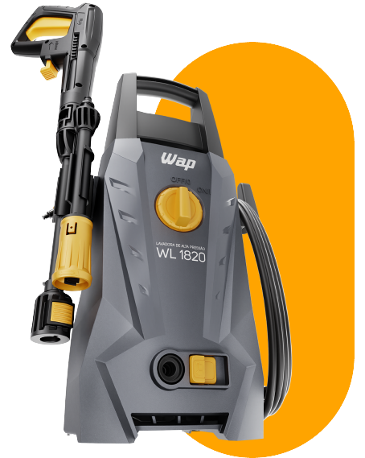
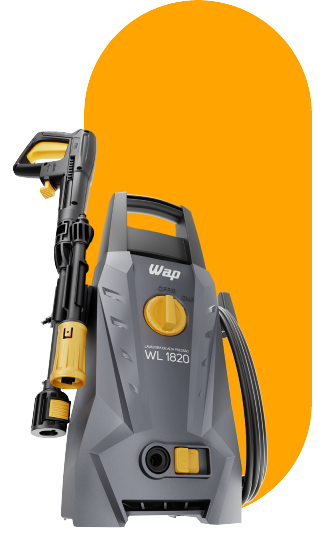
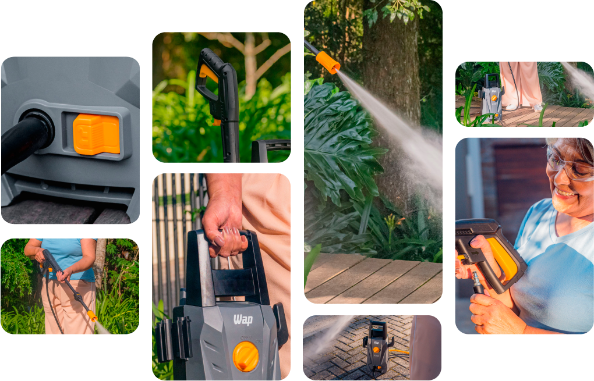
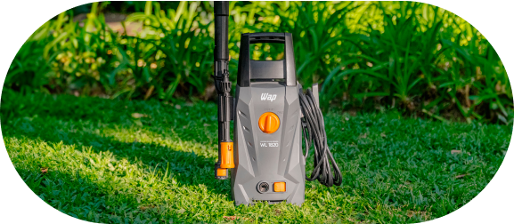
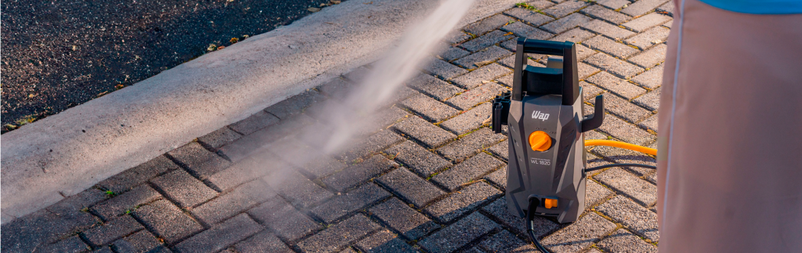
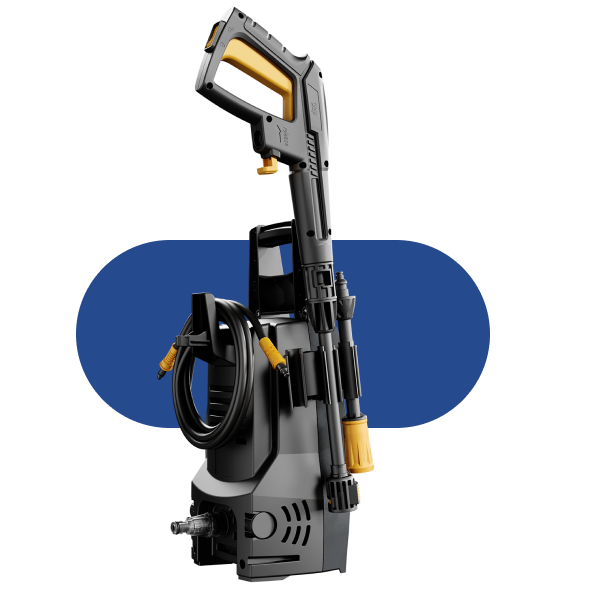
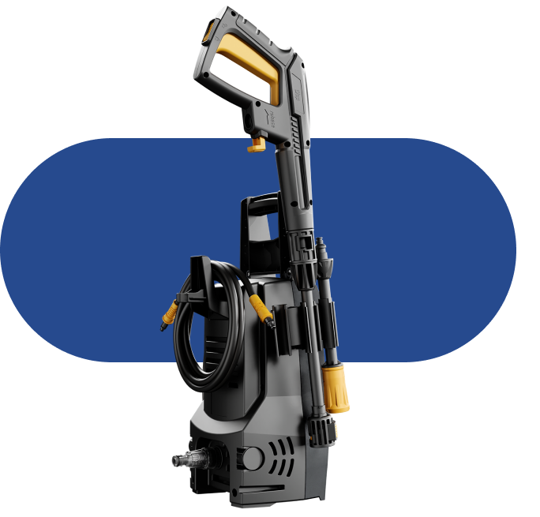
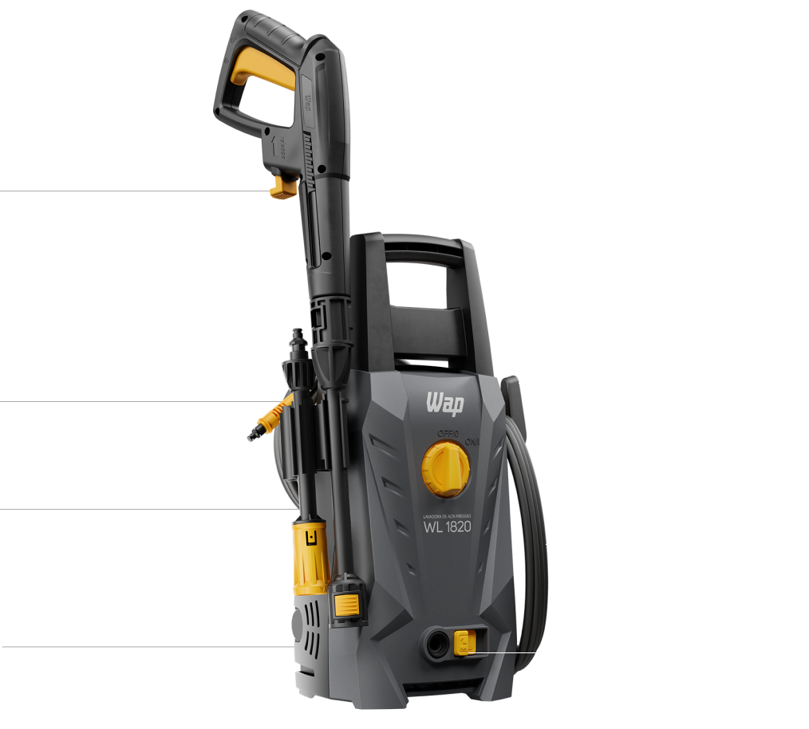
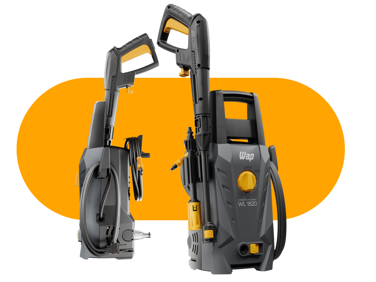

Lavadora de Alta Pressão
WL 1820
Descubra o segredo de uma limpeza sem esforço
Se você busca uma lavadora de alta pressão que ofereça mais desempenho com menor consumo, a WL 1820 é a melhor escolha. A lavadora da WAP garante economia de até 80% de água se comparada a uma mangueira convencional.
Pressão 1500 PSI
A alta pressão de 1500 PSI garante uma limpeza profunda, transformando tarefas desafiadoras em fáceis.
Vazão 330 L/H
Por sua vazão de 330L/H, a limpeza é rápida, eficiente, com economia de água e tempo

Engate rápido
Com apenas um click, o engate rápido torna a tarefa de limpeza uma experiência descomplicada e eficaz.
Remove as sugeiras


Companheira ideal
da limpeza sem esforço
O segredo para eliminar as sujeiras profundas de maneira eficiente em seu jardim, paredes, pisos, automóveis e bicicletas, além de desobstruir rapidamente calhas, canos e banheiros, é uma só: a Lavadora de Alta Pressão WL 1820. Aliada da higienização completa em várias superfícies, a WL 1820 ostenta uma vazão de 330 L/h e 1500 PSI de pressão. Por isso, a lavadora da WAP torna até as tarefas mais desafiadoras em atividades simples e rápidas no seu dia a dia.




Equipada com suportes exclusivos para você acomodar mangueira, pistola, bico regulável e baioneta, facilitando sua movimentação.

Alcança até 5 metros sem trocar de tomada + 3 metros de extensão, a mangueira de alta pressão torna a limpeza muito mais prática e você ganha muito mais autonomia.



A versatilidade necessária para enfrentar desde limpezas delicadas até as mais intensas, tornando-se a aliada perfeita para qualquer desafio de limpeza.

Quando o gatilho é solto, o sistema eletrônico “Stop Total” corta totalmente a água e desliga o motor da Lavadora.


Economia de até 80% de água
Mais desempenho com menor consumo, a WL 1820 é a melhor escolha. A lavadora da WAP garante economia de até 80% de água se comparada a uma mangueira convencional. Ao contrário das mangueiras, que utiliza 30 litros de água por minuto, a WL 1820 utiliza cerca de 5L por minuto.

Quando o gatilho é solto, o sistema eletrônico “Stop Total” corta totalmente a água e desliga o motor da Lavadora.
Com 3 metros de extensão, a mangueira de alta pressão torna a limpeza muito mais prática.
O bico regulável permite diversos tipos de jato de pressão.
Filtro com engate rápido, encaixe a mangueira de jardim no bocal de água em um instante.
O porta acessórios para você acomodar mangueira, pistola, bico regulável e baioneta, facilitando sua movimentação.
O cabo de alimentação alcança até 5 metros sem trocar de tomada, proporcionando mais mobilidade.
Com o engate rápido torna a tarefa de limpeza uma experiência descomplicada e eficaz.
-
 Com o bico regulável você tem diversos tipos de jato de pressão, a versatilidade necessária para enfrentar desde limpezas delicadas até as mais intensas.
Com o bico regulável você tem diversos tipos de jato de pressão, a versatilidade necessária para enfrentar desde limpezas delicadas até as mais intensas. -
 Com o engate rápido torna a tarefa de limpeza uma experiência descomplicada e eficaz.
Com o engate rápido torna a tarefa de limpeza uma experiência descomplicada e eficaz. -
 Filtro com engate rápido, encaixe a mangueira de jardim no bocal de água em um instante.
Filtro com engate rápido, encaixe a mangueira de jardim no bocal de água em um instante. -
 Quando o gatilho é solto, o sistema eletrônico “Stop Total” corta totalmente a água e desliga o motor da Lavadora.
Quando o gatilho é solto, o sistema eletrônico “Stop Total” corta totalmente a água e desliga o motor da Lavadora. -
 Equipada com a mangueira desobstruidora que remove qualquer obstáculo no caminho.
Equipada com a mangueira desobstruidora que remove qualquer obstáculo no caminho.
IDEAL PARA LIMPEZAS EM


Remova as sujeiras mais
difíceis sem esforço
Nossa dupla infalível, o bico leque e o bico concentrado, está pronta para enfrentar desde as limpezas mais delicadas até as mais intensas. Com a ajuda deles, não há nenhuma sujeira em lugares de difícil acesso que resista.

